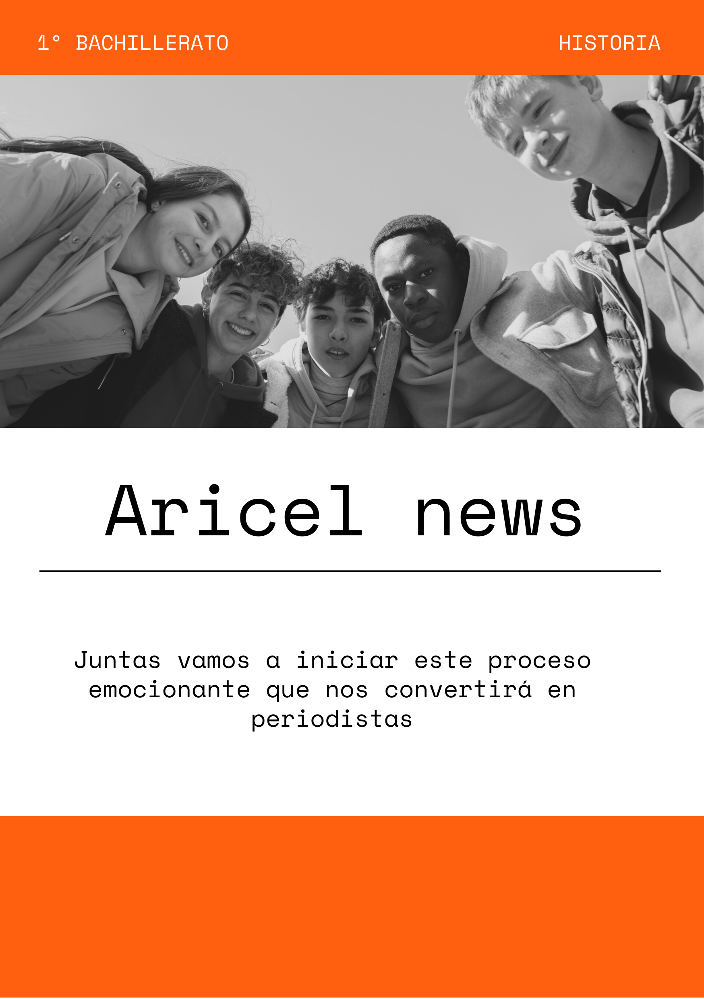

Un trabajo en grupo con un objetivo común
¡Hola a todos/as y bienvenidos/as a esta nueva aventura!

Este recurso se ha generado a partir de IA de Freepik
Hoy no sólo estamos formando equipos de trabajo; estamos sentando las bases de un consejo de redacción. Cada uno/a de vosotros/as tiene algo único que aportar, una perspectiva, una habilidad, una pasión: el arte de la palabra, el diseño visual, la investigación, la edición... y todas son fundamentales para que este proyecto cobre vida.
Nuestro objetivo es simple, pero poderoso: vamos a crear un periódico. Pero no un periódico cualquiera, sino nuestro propio periódico, el reflejo de nuestra comunidad, de nuestros intereses, de lo que sucede en el instituto y en el mundo que nos rodea.
Pensad en esto:
Sois los narradores: Tenéis la oportunidad de contar las historias que importan, de dar voz a ideas, de informar con veracidad y creatividad.
Sois un equipo imparable: La magia de un periódico no reside en una sola persona, sino en la colaboración. Vuestras ideas chocarán, se transformarán y crecerán juntas. Aprended los unos de los otros, respetad las diferencias y celebrad cada pequeño avance.
Sois el cambio: Un buen periódico es una herramienta de influencia. Nos permite analizar, criticar constructivamente y proponer soluciones. Vuestras palabras tienen peso, vuestra visión es importante.
Habrá desafíos, por supuesto. Encontraréis bloqueos creativos, plazos ajustados y la necesidad de tomar decisiones difíciles. Pero recordad que cada obstáculo es una oportunidad para aprender y mejorar.
Este proyecto es vuestro. Asumid la responsabilidad con entusiasmo. Vuestro trabajo no solo será evaluado, sino que será leído por vuestros compañeros/as, profesores/as y familiares. ¡Es vuestra oportunidad de dejar huella!
Así que, pongámonos manos a la obra. Coged vuestros cuadernos, abrid vuestros ordenadores, afilad vuestras ideas.
¡El primer número de nuestro periódico nos espera! ¡A escribir, a diseñar, a informar y a triunfar juntas!